Sprint 10 Task S10.1 · Review Cycle S10.1-streaming-cycle-1 (Round 2 Correction Attempt) · Verified via Headless Chromium Browser.
Anti-stacking task-focused UX: each screen has ONE explicit purpose and ONE primary action. Home is a true lightweight task launcher (8 squircle feature icons directly on surface, compact single-line financial glance, zero stacked card boxes, pending review badged directly on squircle). Quick Capture is dedicated to local note journaling with friendly human copy (no SQLite/token jargon). Dedicated AI Chat screen features incrementally streamed responses, compact tool-working step indicator, safe non-overlapping FAB geometry (21.7px clearance above composer), dynamic English bottom navigation tabs, and functional conversation history loading.
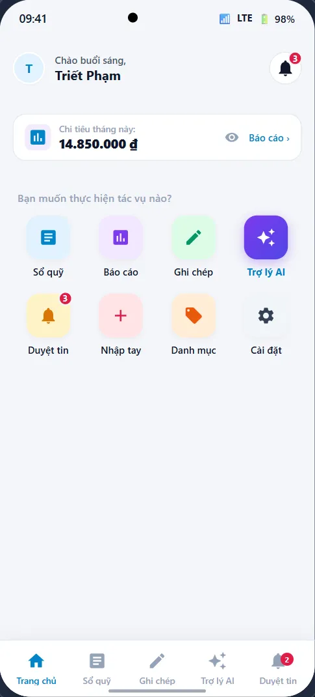
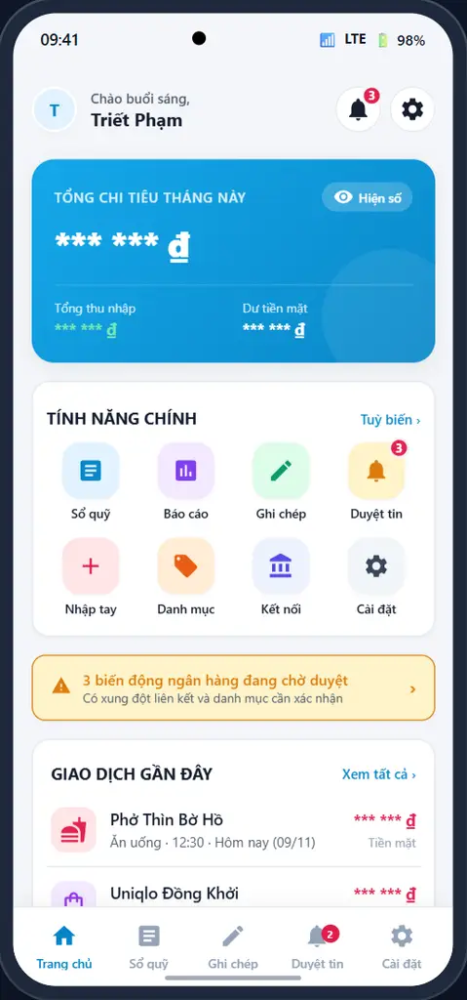
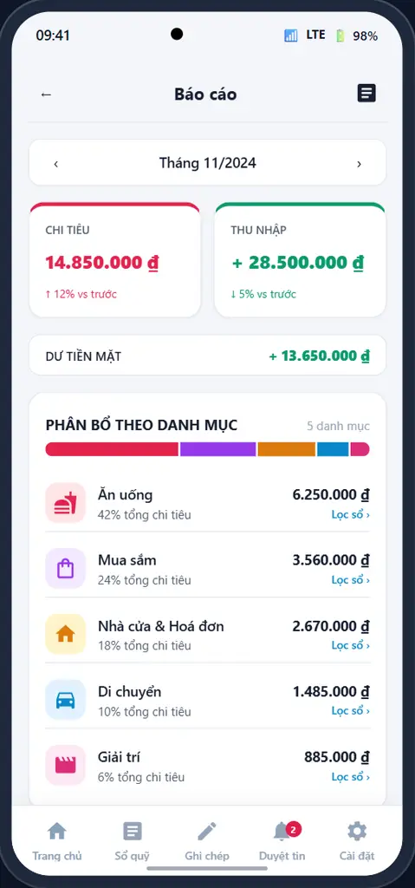
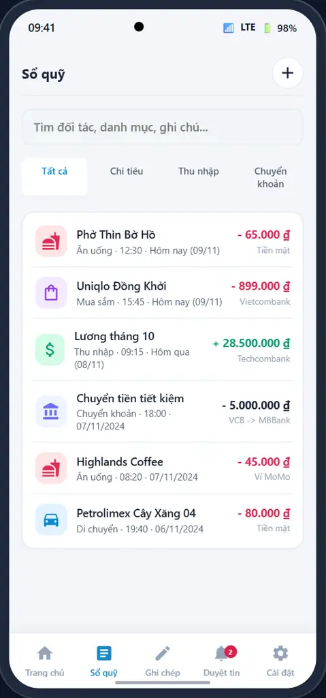
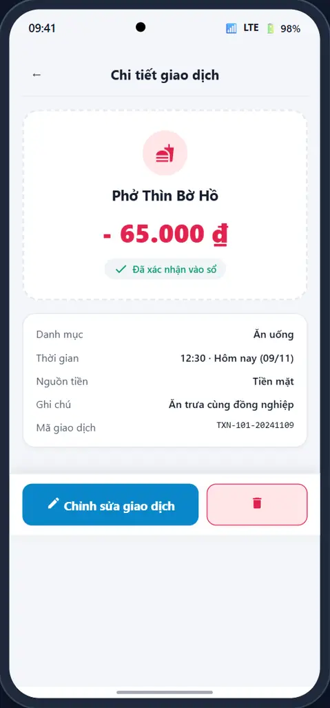
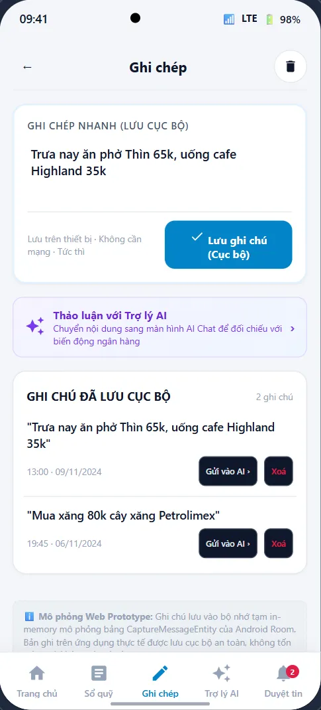
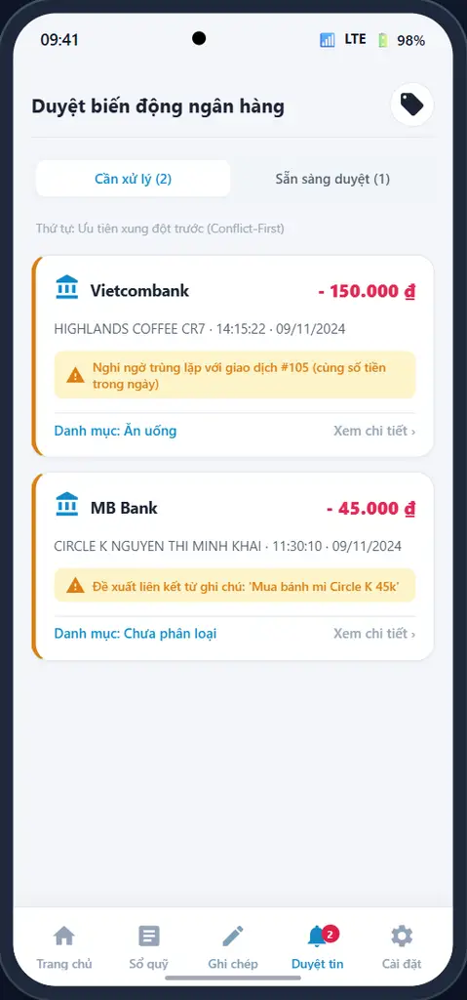
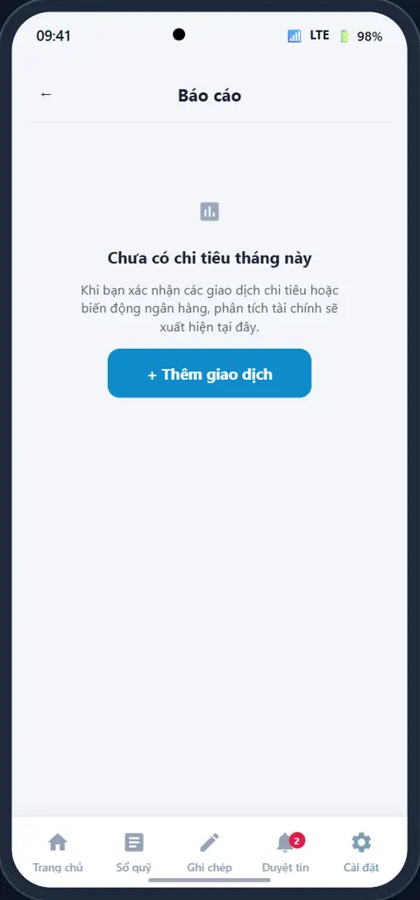
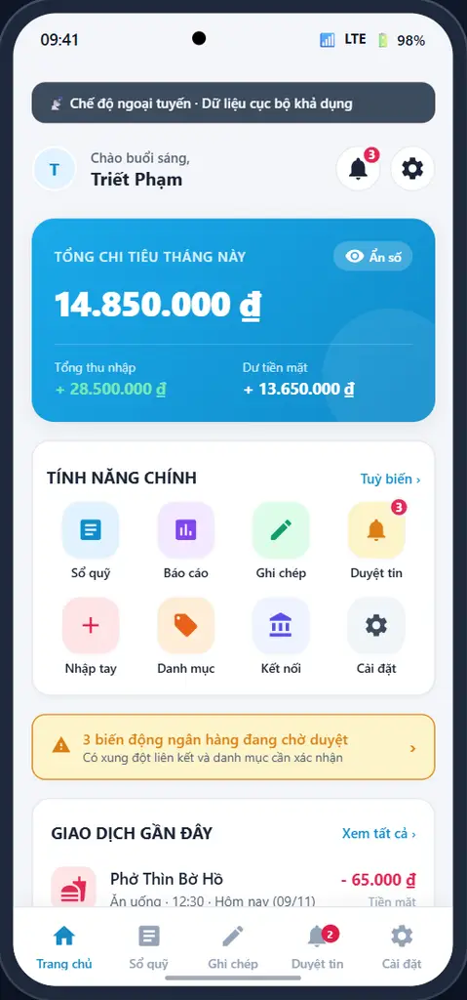
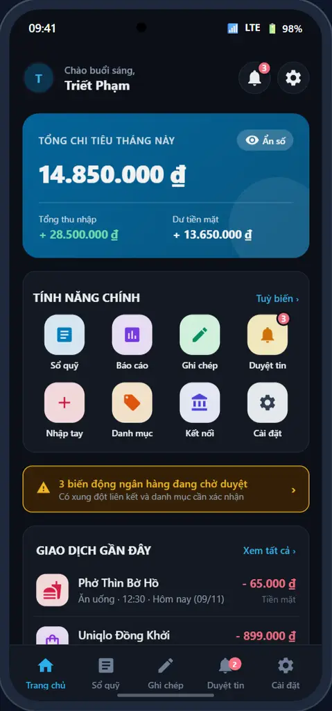
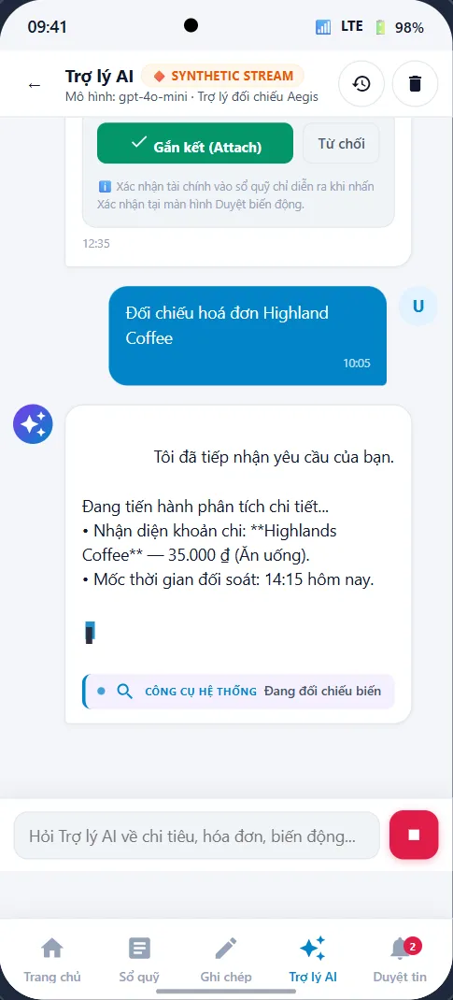
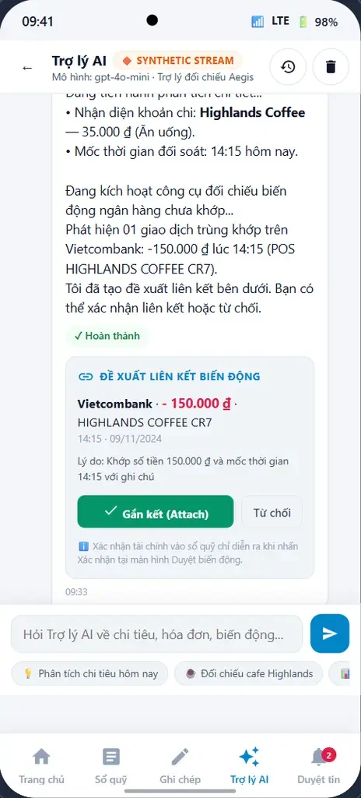
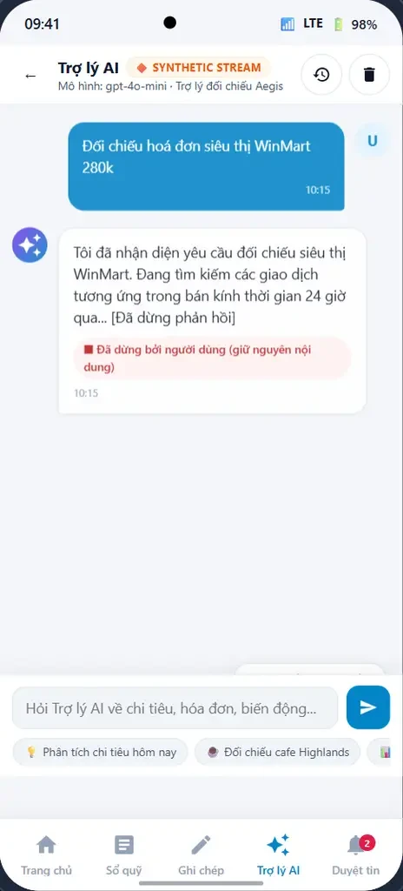
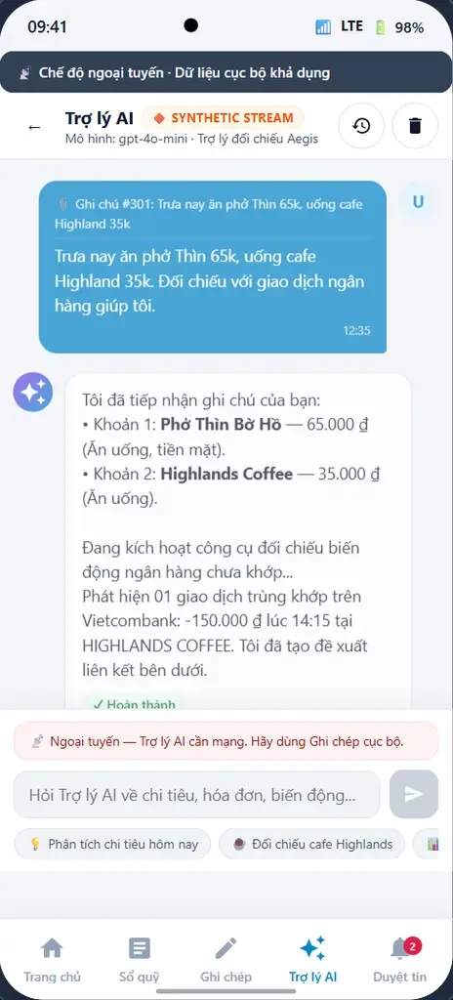
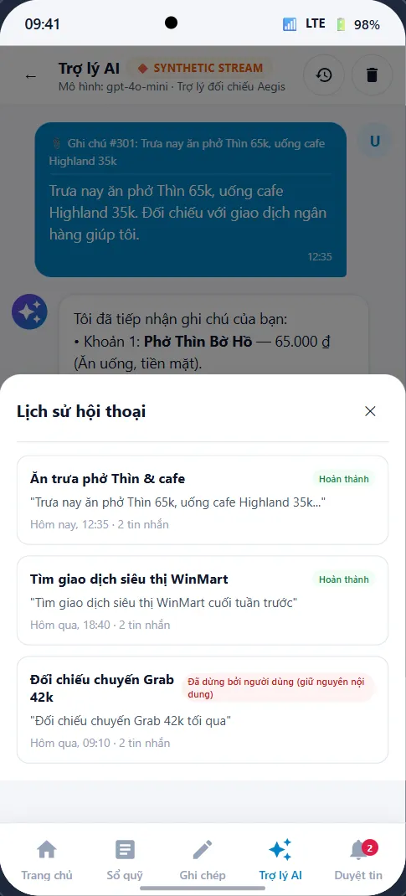
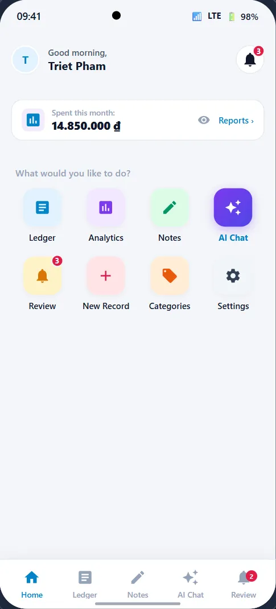